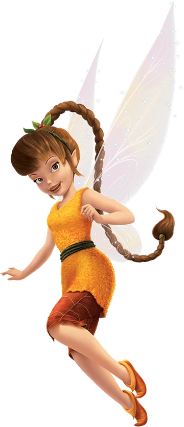

Fawn
Fawn é a fada dos animais no universo de Tinker Bell. Curiosa, divertida e cheia de energia, ela tem um coração gigante e está sempre disposta a ajudar qualquer criatura, seja grande ou pequena.

Características da Fawn
Amor pelos Animais
Ela se comunica naturalmente com os animais e entende seus comportamentos como ninguém.
Personalidade Alegre
Está sempre sorrindo e animando suas amigas. A Fawn é corajosa e adora aventuras!
Criatividade
Mesmo diante de criaturas estranhas, ela usa a criatividade para encontrar soluções.
Curiosidades
- Fawn é dublada por Ginnifer Goodwin em "Tinker Bell e o Monstro da Terra do Nunca".
- Sua roupa é feita de folhas e tem tons terrosos, refletindo sua conexão com a natureza.
- Ela representa a empatia no grupo das fadas e inspira cuidado com os animais.